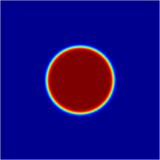
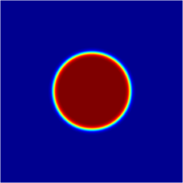
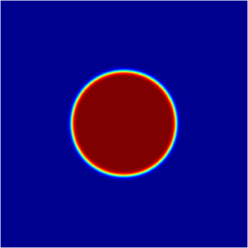
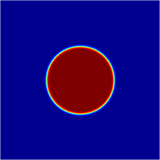
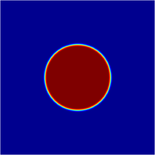
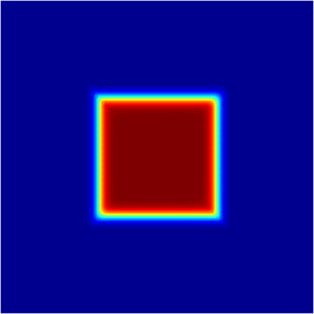
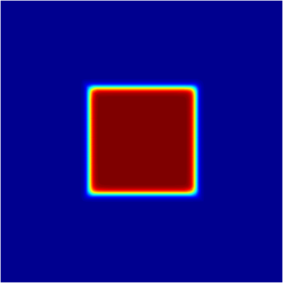
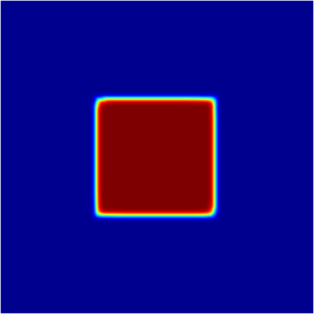
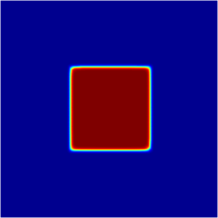
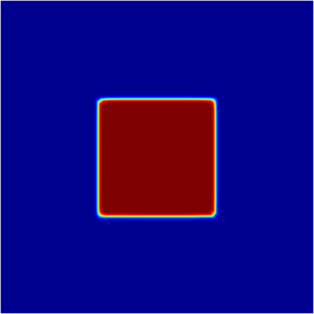

Numerical methods based on $\Gamma$-convergence
We consider the functionals $F_\varepsilon, F$ defined on a metric space $X$, with values in $[0,\infty]$. We say that $F_\varepsilon$ $\Gamma$-converges to $F$ if the following properties hold:
- For every $x \in X$ and every sequence $(x_\varepsilon) \to x$ we have $$F(x) \leq \liminf_{\varepsilon \to 0}F_\varepsilon(x_\varepsilon).$$
- For every $x \in X$ there exists a sequence $(x_\varepsilon) \to x$ such that $$F(x) \geq \limsup_{\varepsilon \to 0} F_\varepsilon(x_\varepsilon).$$
The $\Gamma$-convergence has the following basic properties.
- If $F_\varepsilon\stackrel{\Gamma}{\to}F$ then $F$ is lower semicontinuous on $X$.
- If $F_\varepsilon\stackrel{\Gamma}{\to}F$ and $G$ is a continuous functional then $F_\varepsilon+G \stackrel{\Gamma}{\to} F+G$.
- Suppose $F_\varepsilon \stackrel{\Gamma}{\to} F$. If $(x_\varepsilon)$ is a minimizer of $F_\varepsilon$ on $X$ and $x$ is a limit point of $(x_\varepsilon)$, then $x$ is a minmizer of $F$ on $X$.
This last property motivates the following numerical approach. Suppose we want to minimize $F$ on $X$, where $F$ is a functional which is not easy to handle. If we can find an approximation by $\Gamma$-convergence of $F$, i.e. a sequence of functionals $F_\varepsilon$ which $\Gamma$ converges to $F$, then we could try and minimize numerically $F_\varepsilon$ on $X$ for $\varepsilon$ small enough. Taking $\varepsilon \to 0$, we expect to approach a minimizer of $F$.
One example where this approach works is the $\Gamma$-convergence approximation of the perimeter given by Modica-Mortola's theorem.
$$ F(u) = \begin{cases} \frac{1}{3}Per(\Omega) & u \in BV(D,\{0,1\}),\ \Omega = u^{-1}(1), \int_D u =c \\ \infty & \text{ otherwise} \end{cases}. $$
Then $F_\varepsilon \stackrel{\Gamma}{\to} F$ for the $L^1(D)$ convergence.
Note that allowing the functional to take the value $\infty$ we may impose that the functional to be defined on a smaller subspace like $H^1(D)$ or $BV(D)$. We can also add constraints by imposing the value $\infty$ if the constraint does not hold. On the other hand, note that we approximate the perimeter using a functional defined on a space containing functions which are more regular than the characteristic functions.
It is straightforward to try and use this approximation in order to find numerically the optimal shape which minimizes the perimeter having constant volume. The solution is obviously a disk, and this is well known. These computations are made in order to see a simple example of a numerical method using $\Gamma$-convergence.
In the table presented below, I present the optimization of $F_\varepsilon$ for different values of $\varepsilon$. The measure is chosen $1/7$. Tipically, $\varepsilon$ is chosen as the inverse of the number of points in the discretization. If we choose a lower $\varepsilon$ then the computations are not really relevant, since the witdh of the portion of the function where it passes from $0$ to $1$ is of order $\varepsilon$. You can see that as the discretization increases and $\varepsilon$ decreases, the values approach the optimal value which is $2\sqrt{\pi/7}=1.3398$
 |
 |
 |
 |
 |
| $1.3089$ | $1.3216$ | $1.3276$ | $1.3311$ | $1.3398$ |
The same thing can be done for another types of functionals. A related result provides an approximation of the anisotropic perimeter. The anisotropic perimeter associated to a norm $\varphi$ is $Per_\varphi(\Omega) = \int_{\partial \Omega} \varphi(\vec{n})d\sigma$. In this case, the anisotropic perimeter can be approximated by $\Gamma$-convergence with the functionals $$G_\varepsilon(u) = \begin{cases} \varepsilon \int_\Omega \varphi(\nabla u)^2 +\frac{1}{\varepsilon}\int_\Omega u^2(1-u)^2 & \text{ if } u \in H^1(D),\ \int_D u = c \\ \infty & \text{ otherwise} \end{cases}$$ Below, I present the approximations on refined grids for shapes of measure $1/7$ which minimize the anisotropic perimeter associated to $\varphi(x)= |x_1|+|x_2|$. You can see that as $\varepsilon$ decreases, the values approach the value on the real optimizer. The actual optimizer is the Wulff shape associated to $\varphi$, which in this case is a square. The optimal value is $4/\sqrt{7}=1.5118$
 |
 |
 |
 |
 |
| $1.4851$ | $1.4914$ | $1.4979$ | $1.5031$ | $1.5049$ |
Created: Dec 2014